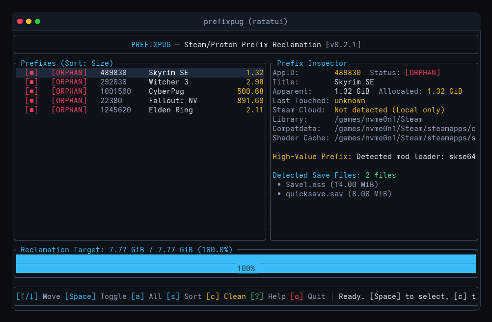

A safety-first CLI and interactive TUI utility designed to sniff out and reclaim orphaned Steam/Proton compatdata prefixes and compiled shader caches on Linux and Steam Deck.

Any ambiguity in drive mounts, active processes, or file types must resolve toward keeping the data. Never gamble a save to reclaim a few gigabytes.
Parses all libraries from libraryfolders.vdf. If any secondary NVMe drive or external SSD is disconnected at scan time, PrefixPug halts immediately (Exit Code 2) rather than misclassifying games on that drive as orphans.
Parses Valve's binary shortcuts.vdf across every user profile, computing 32-bit CRC directory hashes. Your hand-configured Battle.net, Heroic, and emulator prefixes are never flagged as orphans.
Inverts traditional extension allowlists. Sniffs entire directory trees (Saved Games, Documents, AppData) minus expendable caches, safely capturing extensionless, .json, and .xml saves.
Every save archive is compressed, audited with per-file SHA-256 hashes in manifest.json, and flushed with File::sync_all() before any prefix unlinking is permitted.
Proton Experimental, Proton Hotfix, Steam Linux Runtime containers, EasyAntiCheat, and BattlEye runtimes are permanently locked from cleanup.
Measures actual allocated filesystem blocks (st_blocks * 512) rather than apparent file size, accurately accounting for Proton's sparse files and registry hives.
Writing rm -rf against compatdata is easy. Handling real-world edge cases without destroying games and saves is difficult.
| Scenario | Naive Shell Script (rm -rf) |
PrefixPug |
|---|---|---|
| Disconnected Drive | Misclassifies games as orphans & destroys live prefixes | Verifies all library mounts; aborts immediately (Exit 2) |
| Non-Steam Shortcuts | Wipes custom launchers & emulators (no appmanifest) | Parses binary shortcuts.vdf across all user accounts |
| Custom Local Saves | Silent, permanent data loss | Automatic SHA-256 fsynced save vaults before unlinking |
| Active Game or Download | Deletes files during live write operations | Detects running Steam processes and aborts cleanly |
| Host Symlinks | Can traverse outside prefix and unlink $HOME files | Strict path traversal jail; unlinks only symlink file |
PrefixPug runs in dry-run simulation mode by default. Non-interactive deletion requires explicit confirmation.
PrefixPug includes a native SteamOS Decky Loader plugin with a React Quick Access Menu (QAM) interface. Clean shader caches and vault saves directly in Gaming Mode.